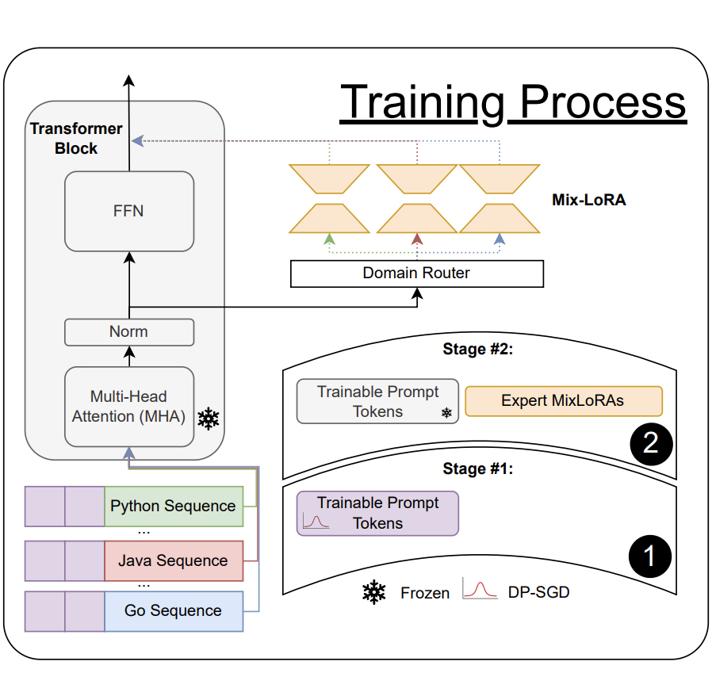
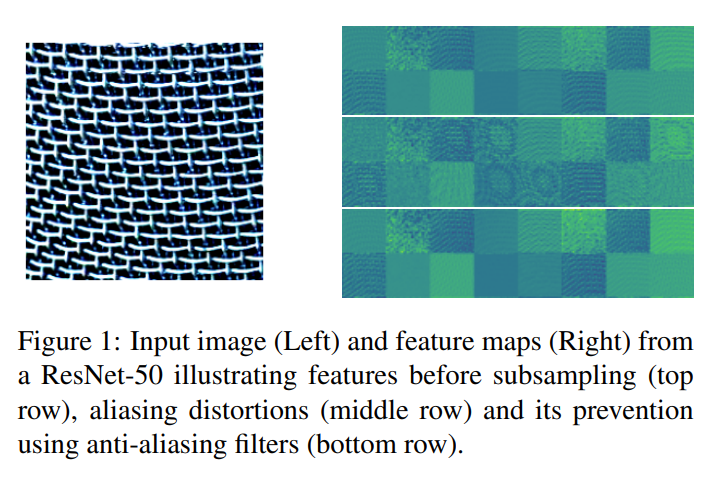

|
Rob Romijnders I'm a PhD student at the University of Amsterdam, where I focus on (federated) machine learning. Previously, I was an AI resident at Google, where I worked on representation learning, calibration, and robustness. I worked at two AI startups and my MSc degree is in Electrical Engineering. |
{kind=link}
Details
I have done three internships: at Brave, at G-Research, and at Apple.
My PhD is sponsored by Qualcomm, and part of the ELLIS program. I received an Outstanding Reviewer award at ICCV 2021, an ELSA and a DAAD scholarship. I graduated both high school, BSc and MSc cum laude, which is top 10% of class.
|

|
Multi-reference alignment for MIMO wireless communications
Rob Romijnders, Gabriele Cesa, Christos Louizos, Kumar Pratik, Arash Behboodi, NeurIPS workshop AI4NextG Wireless Communications, 2025 OpenReview / paper link A statistical model for multi-reference alignment with computationally efficient inference. |
|

|
NoEsis: A Modular LLM with Differentially Private Knowledge Transfer
Rob Romijnders, Stefanos Laskaridis, Ali Shanin Shamsabadi, Hamed Haddadi, MCDC workshop, 2025 arXiv / slides / poster Studying knowledge transfer, modularity, and privacy in Large Language Models. |
|
|
Convex Approximation of Two-Layer ReLU Networks for Hidden State Differential Privacy
Rob Romijnders, Antti Koskela, NeurIPS, 2025 arXiv / slides First hidden state differential privacy result for learning multi-layer neural networks. |
|
|
DNA: Differentially private Neural Augmentation for contact tracing
Rob Romijnders, Christos Louizos, Yuki M. Asano, Max Welling, ICLR Privacy workshop, 2024 Github / arXiv / slides / poster Improving the privacy-utility trade-off of my previous work on differential privacy in a decentralized setting. |
|
|
Protect Your Score: Contact Tracing With Differential Privacy Guarantees
Rob Romijnders, Christos Louizos, Yuki M. Asano, Max Welling AAAI, 2024 arXiv / Github / Github C++ / Poster / Slides Contact tracing with provable differential privacy guarantees in a decentralized setting. |
|
|
No Time to Waste: practical statistical contact tracing with few low-bit messages
Rob Romijnders, Yuki M. Asano, Christos Louizos, Max Welling AISTATS, 2023 Paper / Open source code A communication-efficient approach to decentralized, statistical contact tracing. |
|
|
The Effect of Covariate Shift and Network Training on Out-of-Distribution Detection
Simon Mariani, Sander R. Klomp, Rob Romijnders, Peter H.N. de With VISGRAPP, 2023 Paper / Open source code Examining robustness in out-of-distribution detection under dataset shift and training variations. |
|
|
Beyond transfer learning: Co-finetuning for action localisation
Anurag Arnab, Xuehan Xiong, Alexey Gritsenko, Rob Romijnders, Josip Djolonga, Mostafa Dehghani, Chen Sun, Mario Lučić, Cordelia Schmid arXiv, 2022 arXiv Introducing co-finetuning for more effective video understanding and localization. |
|

|
Impact of Aliasing on Generalization in Deep Convolutional Networks
Cristina Vasconcelos, Hugo Larochelle, Vincent Dumoulin, Rob Romijnders, Nicolas Le Roux, Ross Goroshin ICCV, 2021 arXiv Analyzing how aliasing affects generalization in convolutional networks. |
|
|
Revisiting the Calibration of Modern Neural Networks
Matthias Minderer, Josip Djolonga, Rob Romijnders, Frances Hubis, Xiaohua Zhai, Neil Houlsby, Dustin Tran, Mario Lucic NeurIPS, 2021 arXiv A deeper look into calibration issues in deep neural networks. |
|
|
On Robustness and Transferability of Convolutional Neural Networks
Josip Djolonga, Jessica Yung, Michael Tschannen, Rob Romijnders, Lucas Beyer, Alexander Kolesnikov, Joan Puigcerver, Matthias Minderer, Alexander D'Amour, Dan Moldovan, Sylvan Gelly, Neil Houlsby, Xiaohua Zhai, Mario Lucic CVPR, 2021 arXiv / Open source code Studying the generalization of CNNs under robustness and domain shifts. |
|
|
SI-SCORE: An image dataset for fine-grained analysis of robustness to object location, rotation and size.
Jessica Yung, Rob Romijnders, Alexander Kolesnikov, Lucas Beyer, Josip Djolonga, Neil Houlsby, Sylvain Gelly, Mario Lucic, Xiaohua Zhai ICLR workshops, 2021 arXiv / Open source data A synthetic benchmark dataset to evaluate object-centric robustness. |
|
|
Representation learning from videos in-the-wild: An object-centric approach
Rob Romijnders, Aravindh Mahendran, Michael Tschannen, Josip Djolonga, Marvin Ritter, Neil Houlsby, Mario Lucic WACV, 2021 arXiv Object-centric unsupervised representation learning from real-world video. |
|
|
Data Selection for training Semantic Segmentation CNNs with cross-dataset weak supervision
Panagiotis Meletis, Rob Romijnders, Gijs Dubbelman IEEE ITSC, 2019 arXiv Enhancing semantic segmentation with selective and weakly supervised data. |
|
|
Applying deep bidirectional LSTM and mixture density network for basketball trajectory prediction
Yu Zhao, Rennong Yang, Guillaume Chevalier, Rajiv C Shah, Rob Romijnders Optik, 2019 Journal article Predicting basketball trajectories with sequential deep learning models. |
|
|
A domain agnostic normalization layer for unsupervised adversarial domain adaptation
Rob Romijnders, Panagiotis Meletis, Gijs Dubbelman WACV, 2018 WACV `18 / Open source code A study of normalization layers and inter-domain dependencies in robust synthetic-to-real domain adaptation. |
Miscellanea |
Recorded Talks |
PyData 2017, machine translation PyData 2018, Bayesian ML PyData 2024, ML & Privacy |
Academic Reviewing |
AAAI 2024
ITSC 2020 ICLR 2020, 2021, 2022 WACV 2021, 2022 CVPR 2021 ICML 2021 ICCV 2021 (outstanding reviewer award) NeurIPS 2021, 2022, 2023, 2025 |
|
Credits for the original code of this page. |